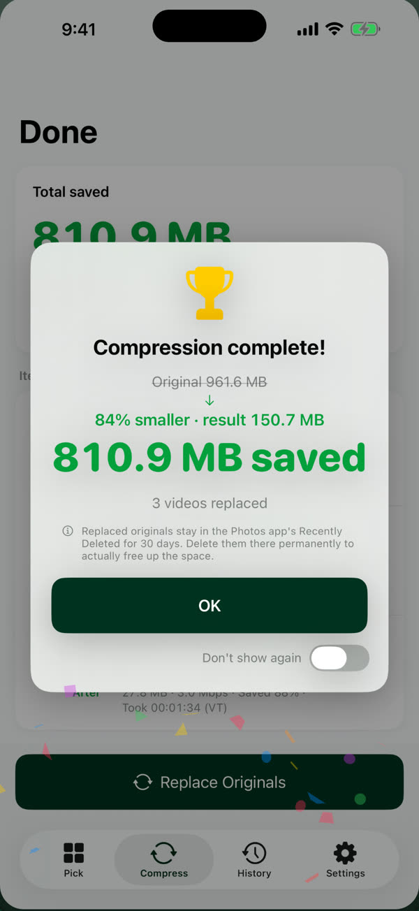
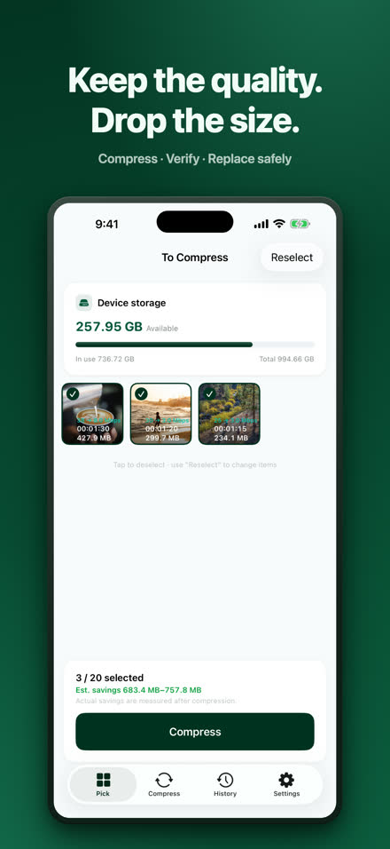
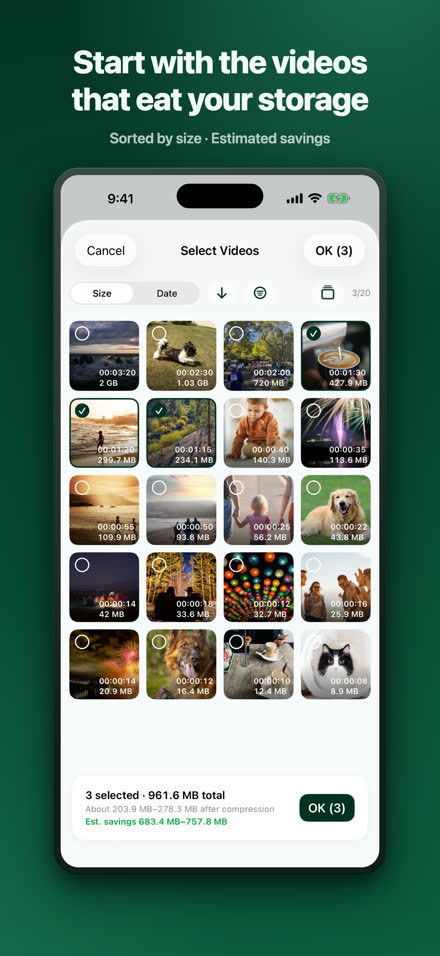
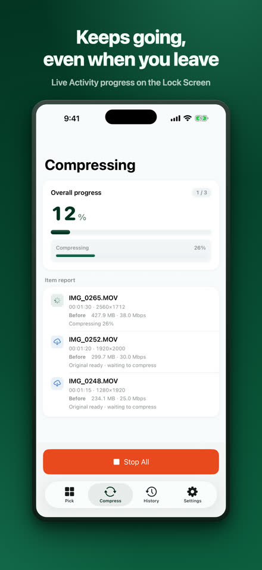
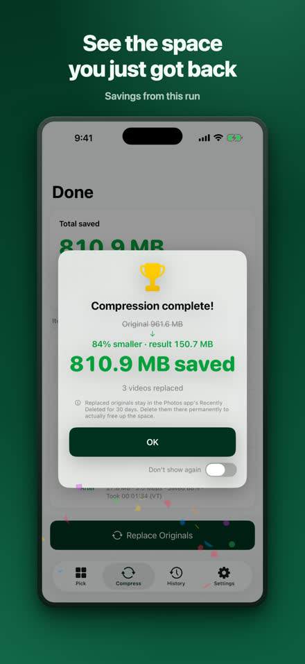
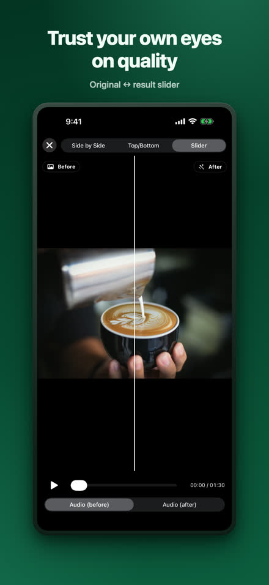
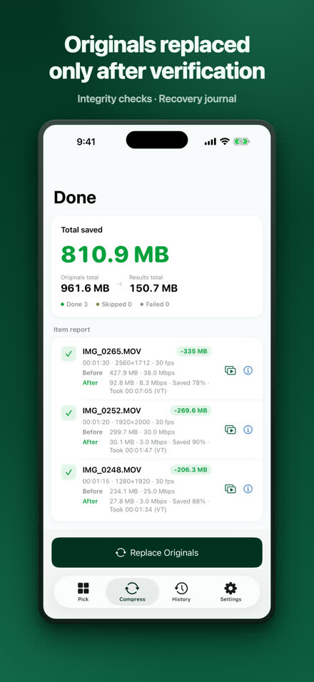
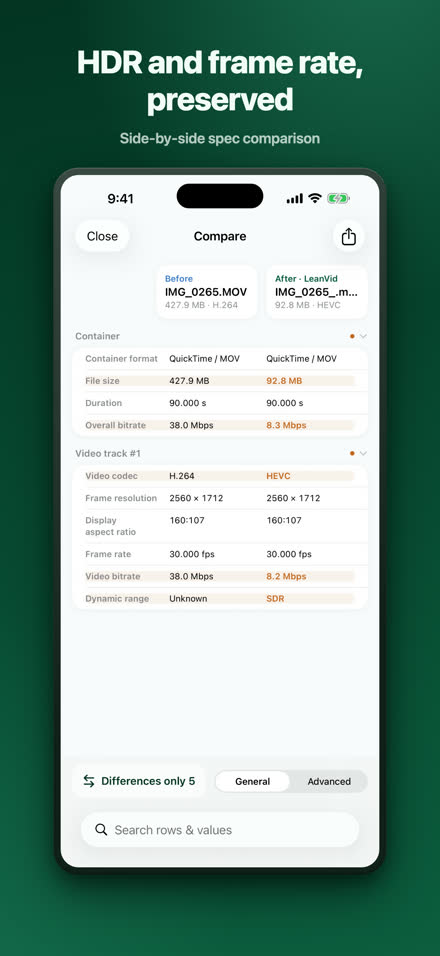
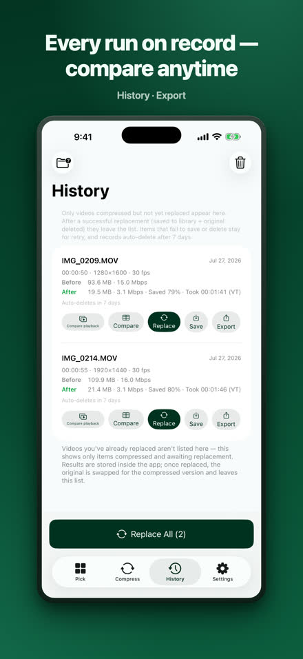

Shrink videos, keep the quality.
LeanVid compresses videos from your photo library and the Files app by lowering only the bitrate — resolution, frame rate, color, and HDR stay intact. Every result is verified before it replaces the original, and photo library originals stay recoverable for 30 days.
Download on the App StoreiOS 18 or later · iPhone and iPad (also runs on Apple silicon Macs as an iPad app)

Same video, a fraction of the space.
Our own test: a 3 min 34 s screen recording. Results vary by video.
Pick, compress, check, replace.








Everything you need, built in.
bitrate-only, HDR and every track preserved
integrity checks, recovery journal, system confirmation
side-by-side and slider comparison, full spec table
pick videos from On My iPhone or iCloud Drive; MKV, WebM, AVI, WMV, FLV, TS, MPG and VOB files are converted to HEVC/MP4 on your device
background compression with Live Activity progress (iOS 26+); on earlier versions it resumes automatically when you return
your videos are compressed on your iPhone and are never uploaded; no account required — Privacy